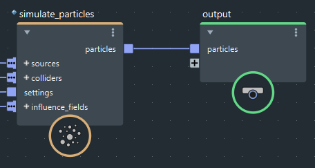

只需将可渲染对象连接到图表顶层的 output 节点，即可将几何体输出到场景。如果要链接图表以控制执行过程、将 Bifrost 网格转化为 Maya 网格或使用 bifcmd 命令行工具将几何体缓存到文件，可使用此技术。

默认情况下，所有以这种方式输出的几何体都是 Maya 场景层级中 bifrostGraphShape 节点的一部分。但是，您可以将此输出转化为较旧的 bifShape 输出，每个 Object 或 array<Object> 类型的输出端口均有一个单独的 bif 输出，如在 bifrostGraphShape 和 bifShape 输出之间转化中所述。